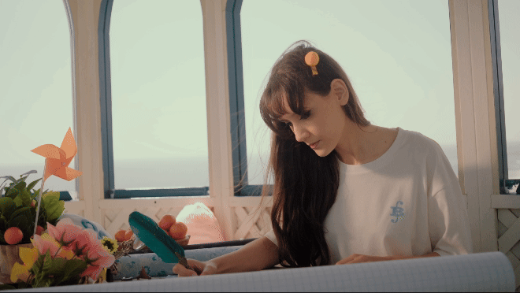
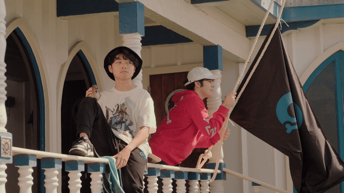
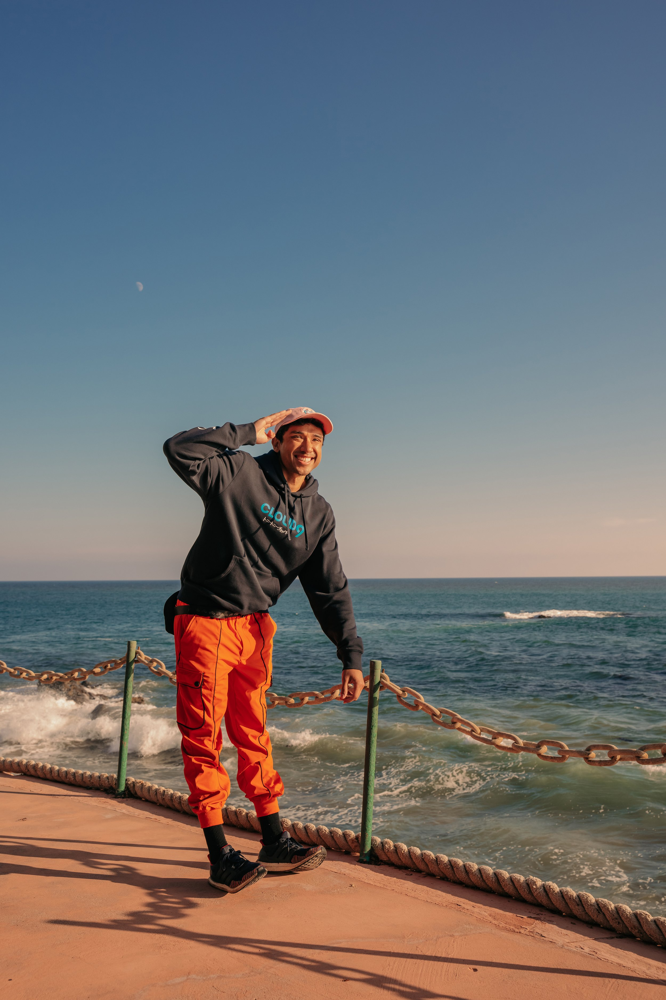
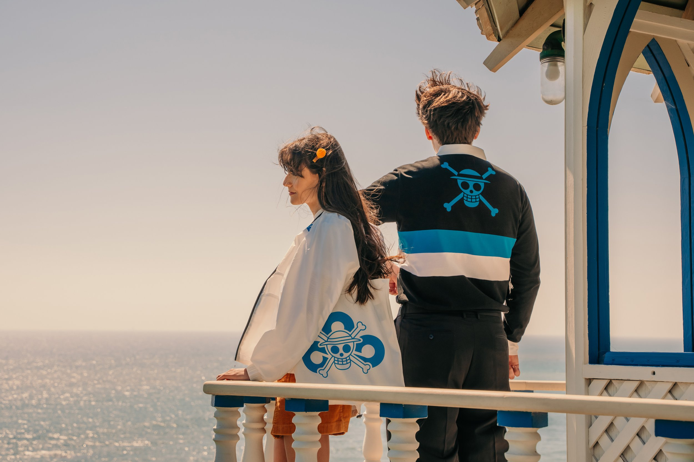
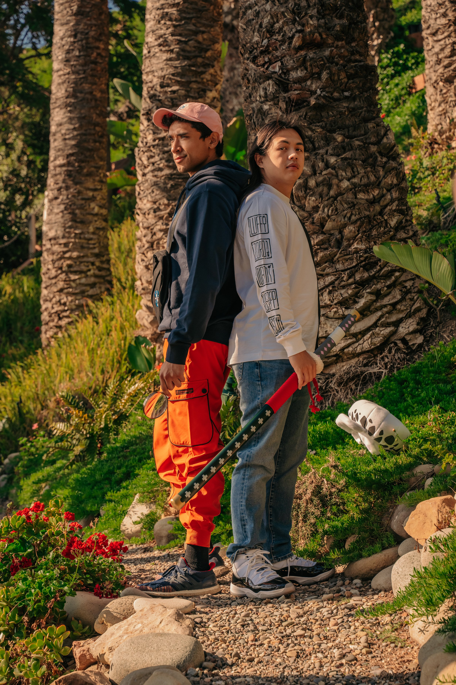
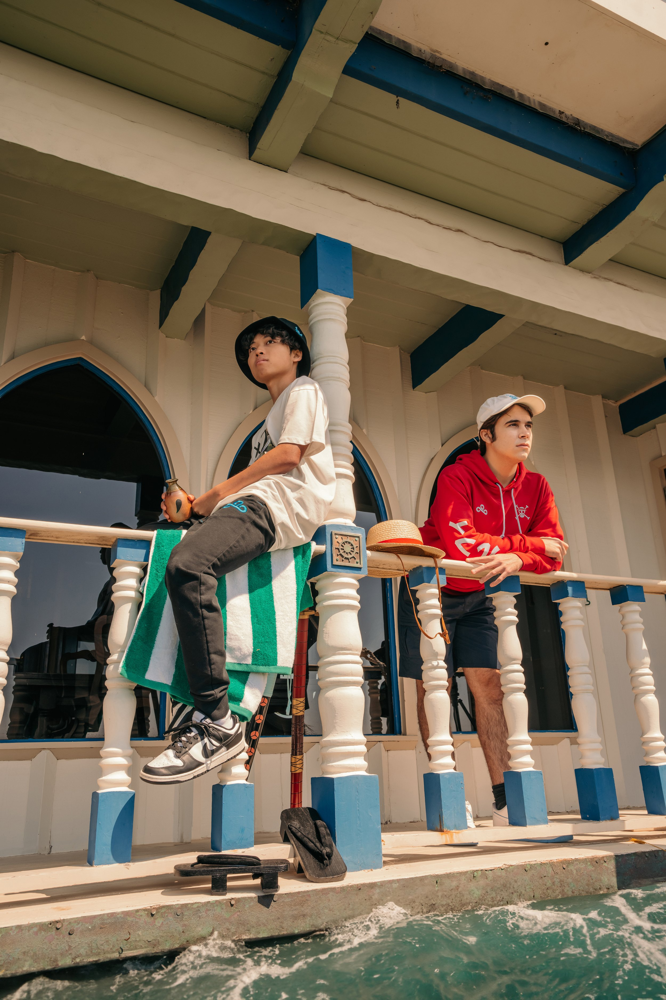
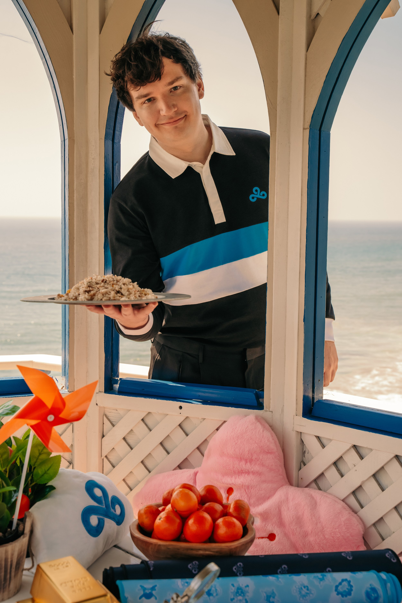
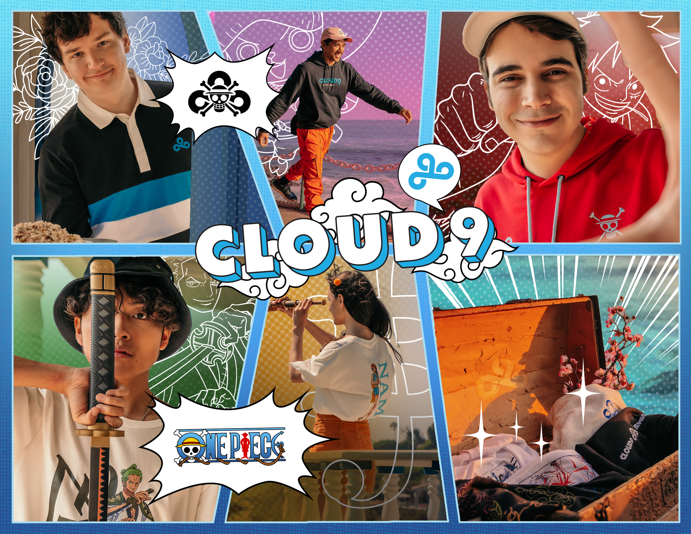
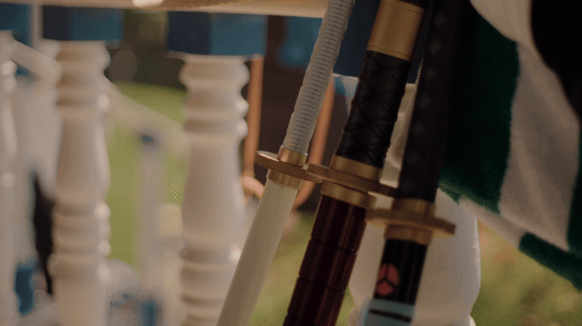

Cloud9 x One Piece Merch Launch
Client: Cloud9, Toei Animation
Year: 2023
Role: Creative Direction | Set Design | Art Direction | Photography
We helped bring One Piece into the real life - full of color, chaos, and that “let’s do this together” energy.
We directed and did production design for the launch, building a space that celebrates adventure, friendship, and showing up with your crew.
We recreated the iconic One Piece eyecatcher - the moment where the world snaps into focus through a maritime telescope. Each of Cloud9’s esports players and streamers got their own vignette, inspired by a member of the Straw Hat crew: Luffy, Zoro, Nami, Usopp, Sanji, Chopper. One crew. The crossover of C9 talent with One Piece authentically introduces the collection to both anime fans and the Cloud9 community. Every reveal is full of character, until it all pulls back to one final shot: the C9 × One Piece flag, flapping in the wind.
We brought Cloud9’s anime adventure to life - friendship, fun, and merch collide
Prop Sourcing
Prop sourcing was all about character. Each scene was built with carefully chosen details that reflect its Straw Hat member, from Zoro’s swords, Luffy’s hat, a green beach towel, and the ship’s flag, to Nami’s study-like setup with map paper, a feather pen, compass, ruler, windmill, an orange tree, and custom money.
Wardrobe Styling
For wardrobing, we styled the launch merchandise with supporting pieces in each character’s color palette. Chopper was paired with bright orange pants, Nami with an orange skirt and matching puff hair clips, and Sanji with tailored slacks to complete his put-together chef look.










Co-Produced with Cloud9’s Team